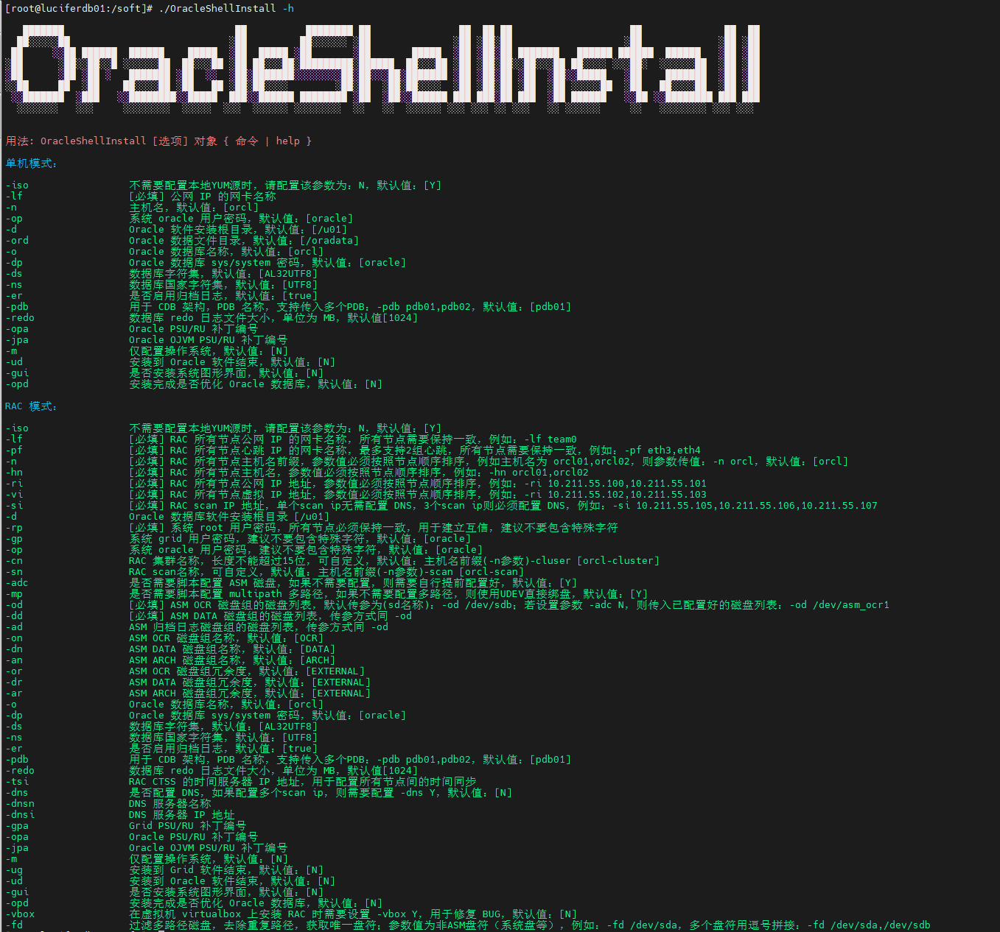

← 返回安装合集
统信 UOS V20 一键安装 Oracle 12CR2（220118）单机版
Oracle 一键安装脚本，演示 统信 UOS V20 一键安装 Oracle 12CR2（220118）单机版过程（全程无需人工干预）：（脚本包括 ORALCE PSU/OJVM 等补丁自动安装）
⭐️ 脚本下载地址：Shell脚本安装Oracle数据库
脚本第三代支持 N 节点一键安装，不限制节点数！

安装准备
- 1、安装好操作系统，建议安装图形化
- 2、配置好网络
- 3、挂载本地 ISO 镜像源
- 4、上传必须软件安装包（安装基础包，补丁包：35926646、35943157、6880880）
- 5、上传一键安装脚本：OracleShellInstall
✨ 偷懒可以直接下载本文安装包合集：统信 UOS V20 安装 Oracle Oracle 12CR2（220118）单机版安装包合集（包含补丁！！！）
演示环境信息
# 主机版本
[root@uosv20 soft]# cat /etc/os-release
PRETTY_NAME="UOS Server 20"
NAME="UOS Server 20"
VERSION_ID="20"
VERSION="20"
ID=uos
HOME_URL="https://www.chinauos.com/"
BUG_REPORT_URL="https://bbs.chinauos.com/"
VERSION_CODENAME=kongzi
PLATFORM_ID="platform:uelc20"
# 网络信息
[root@uosv20 soft]# ip a
2: ens33: <BROADCAST,MULTICAST,UP,LOWER_UP> mtu 1500 qdisc fq_codel state UP group default qlen 1000
link/ether 00:0c:29:db:c5:f9 brd ff:ff:ff:ff:ff:ff
inet 192.168.6.141/24 brd 192.168.6.255 scope global noprefixroute ens33
valid_lft forever preferred_lft forever
inet6 fe80::88f9:eb9b:43bc:6d1c/64 scope link noprefixroute
valid_lft forever preferred_lft forever
# 挂载本地 ISO 镜像
[root@uosv20 soft]# mount | grep iso9660 | grep -v "/run/media"
/dev/sr0 on /mnt type iso9660 (ro,relatime,nojoliet,check=s,map=n,blocksize=2048,iocharset=utf8)
[root@uosv20 soft]# df -h|grep /mnt
/dev/sr0 7.8G 7.8G 0 100% /mnt
# 安装包存放在 /soft 目录下
[root@uosv20 ~]# cd /soft/
[root@uosv20 soft]# ll
-rwx------ 1 root root 3453696911 3月 28 16:44 LINUX.X64_122010_db_home.zip
-rwxr-xr-x 1 root root 169044 3月 28 16:43 OracleShellInstall
-rwxr-xr-x 1 root root 138022236 3月 28 16:43 p33561275_122010_Linux-x86-64.zip
-rwx------ 1 root root 1020001457 3月 28 16:43 p33587128_122010_Linux-x86-64.zip
-rwx------ 1 root root 124109254 3月 28 16:43 p6880880_122010_Linux-x86-64.zip
-rwx------ 1 root root 321590 3月 28 16:43 rlwrap-0.44.tar.gz
确保安装环境准备完成后，即可执行一键安装。
安装命令
使用标准生产环境安装参数：
# 根据脚本 README 或者 -h 命令提示，编辑好一键安装命令，进入 /soft 目录执行安装：
./OracleShellInstall -lf ens33 `# local ip ifname`\
-n uosv20 `# hostname`\
-op oracle `# oracle password`\
-d /u01 `# software base dir`\
-ord /oradata `# data dir`\
-o lucifer `# dbname`\
-dp oracle `# sys/system password`\
-ds AL32UTF8 `# database character`\
-ns AL16UTF16 `# national character`\
-redo 100 `# redo size`\
-opa 33587128 `# oracle PSU/RU`\
-jpa 33561275 `# OJVM PSU/RU`\
-opd Y `# optimize db`
选择需要安装的模式以及版本，即可开始安装：
安装过程
███████ ██ ████████ ██ ██ ██ ██ ██ ██ ██
██░░░░░██ ░██ ██░░░░░░ ░██ ░██ ░██░██ ░██ ░██ ░██
██ ░░██ ██████ ██████ █████ ░██ █████ ░██ ░██ █████ ░██ ░██░██ ███████ ██████ ██████ ██████ ░██ ░██
░██ ░██░░██░░█ ░░░░░░██ ██░░░██ ░██ ██░░░██░█████████░██████ ██░░░██ ░██ ░██░██░░██░░░██ ██░░░░ ░░░██░ ░░░░░░██ ░██ ░██
░██ ░██ ░██ ░ ███████ ░██ ░░ ░██░███████░░░░░░░░██░██░░░██░███████ ░██ ░██░██ ░██ ░██░░█████ ░██ ███████ ░██ ░██
░░██ ██ ░██ ██░░░░██ ░██ ██ ░██░██░░░░ ░██░██ ░██░██░░░░ ░██ ░██░██ ░██ ░██ ░░░░░██ ░██ ██░░░░██ ░██ ░██
░░███████ ░███ ░░████████░░█████ ███░░██████ ████████ ░██ ░██░░██████ ███ ███░██ ███ ░██ ██████ ░░██ ░░████████ ███ ███
░░░░░░░ ░░░ ░░░░░░░░ ░░░░░ ░░░ ░░░░░░ ░░░░░░░░ ░░ ░░ ░░░░░░ ░░░ ░░░ ░░ ░░░ ░░ ░░░░░░ ░░ ░░░░░░░░ ░░░ ░░░
请选择安装模式 [单机(si)/单机ASM(sa)/集群(rac)] : si
数据库安装模式: single
请选择数据库版本 [11/12/19/21] : 12
数据库版本: 12
#==============================================================#
配置本地 YUM 源
#==============================================================#
[BaseOS]
name=BaseOS
baseurl=file:///mnt/BaseOS
enabled=1
gpgcheck=0
[AppStream]
name=AppStream
baseurl=file:///mnt/AppStream
enabled=1
gpgcheck=0
#==============================================================#
禁用防火墙
#==============================================================#
防火墙服务未启动，无需禁用。
#==============================================================#
禁用 SELinux
#==============================================================#
SELinux status: disabled
#==============================================================#
YUM 静默安装依赖包
#==============================================================#
bc-1.07.1-7.uelc20.1.x86_64
binutils-2.30-117.0.1.uelc20.04.x86_64
未安装软件包 compat-libcap1
gcc-8.5.0-10.1.0.3.uelc20.03.x86_64
gcc-c++-8.5.0-10.1.0.3.uelc20.03.x86_64
elfutils-libelf-0.187-4.uelc20.02.x86_64
elfutils-libelf-devel-0.187-4.uelc20.02.x86_64
glibc-2.28-189.5.0.2.uelc20.05.x86_64
glibc-devel-2.28-189.5.0.2.uelc20.05.x86_64
libaio-0.3.112-5.up1.uelc20.01.x86_64
libaio-devel-0.3.112-5.up1.uelc20.01.x86_64
libgcc-8.5.0-10.1.0.3.uelc20.03.x86_64
libstdc++-8.5.0-10.1.0.3.uelc20.03.x86_64
libstdc++-devel-8.5.0-10.1.0.3.uelc20.03.x86_64
libxcb-1.13.1-4.uelc20.1.x86_64
libX11-1.6.8-5.uelc20.4.x86_64
libXau-1.0.9-3.uelc20.x86_64
libXi-1.7.10-1.uelc20.x86_64
libXrender-0.9.10-9.uelc20.1.x86_64
make-4.2.1-12.uelc20.2.x86_64
net-tools-2.0-0.53.20160912git.uelc20.3.x86_64
smartmontools-7.1-1.0.2.uelc20.x86_64
sysstat-11.7.3-7.uelc20.01.x86_64
e2fsprogs-1.45.6-18.uelc20.01.x86_64
e2fsprogs-libs-1.45.6-18.uelc20.01.x86_64
unzip-6.0-46.uelc20.4.x86_64
openssh-clients-8.2p1-19.up1.0.2.uelc20.04.x86_64
readline-7.0-12.uelc20.1.x86_64
readline-devel-7.0-12.uelc20.1.x86_64
psmisc-23.3-1.uelc20.01.x86_64
ksh-20120801-255.uelc20.1.x86_64
nfs-utils-2.5.1-8.up3.uelc20.04.x86_64
tar-1.32-3.uelc20.03.x86_64
device-mapper-multipath-0.8.4-30.uelc20.1.x86_64
avahi-0.7-21.uelc20.6.x86_64
ntp-4.2.8p15-3.uelc20.02.x86_64
chrony-4.2-1.0.1.uelc20.02.x86_64
libXtst-1.2.3-9.uelc20.1.x86_64
libXrender-devel-0.9.10-9.uelc20.1.x86_64
fontconfig-devel-2.13.1-5.uelc20.01.x86_64
policycoreutils-2.9-19.uelc20.x86_64
未安装软件包 policycoreutils-python
librdmacm-37.2-1.0.3.uelc20.x86_64
未安装软件包 libnsl*
libibverbs-37.2-1.0.3.uelc20.x86_64
未安装软件包 compat-openssl10
policycoreutils-python-utils-2.9-19.uelc20.noarch
未安装软件包 elfutils*
glibc-2.28-189.5.0.2.uelc20.05.x86_64
#==============================================================#
配置主机名
#==============================================================#
uosv20
#==============================================================#
配置 /etc/hosts 文件
#==============================================================#
127.0.0.1 localhost localhost.localdomain localhost4 localhost4.localdomain4
::1 localhost localhost.localdomain localhost6 localhost6.localdomain6
192.168.6.141 uosv20
#==============================================================#
创建用户和组
#==============================================================#
oracle 用户：
用户id=54321(oracle) 组id=54321(oinstall) 组=54321(oinstall),54322(dba),54323(oper),54324(backupdba),54325(dgdba),54326(kmdba),54330(racdba)
#==============================================================#
配置 Avahi-daemon 服务
#==============================================================#
● avahi-daemon.service - Avahi mDNS/DNS-SD Stack
Loaded: loaded (/usr/lib/systemd/system/avahi-daemon.service; disabled; vendor preset: enabled)
Active: inactive (dead)
3月 29 09:22:41 uosv20 avahi-daemon[1073]: No service file found in /etc/avahi/services.
3月 29 09:22:41 uosv20 avahi-daemon[1073]: Files changed, reloading.
3月 29 09:22:41 uosv20 avahi-daemon[1073]: No service file found in /etc/avahi/services.
3月 29 09:22:43 uosv20 avahi-daemon[1073]: Got SIGTERM, quitting.
3月 29 09:22:43 uosv20 avahi-daemon[1073]: Leaving mDNS multicast group on interface ens33.IPv6 with address fe80::88f9:eb9b:43bc:6d1c.
3月 29 09:22:43 uosv20 systemd[1]: Stopping Avahi mDNS/DNS-SD Stack...
3月 29 09:22:43 uosv20 avahi-daemon[1073]: Leaving mDNS multicast group on interface ens33.IPv4 with address 192.168.6.141.
3月 29 09:22:43 uosv20 avahi-daemon[1073]: avahi-daemon 0.7 exiting.
3月 29 09:22:43 uosv20 systemd[1]: avahi-daemon.service: Succeeded.
3月 29 09:22:43 uosv20 systemd[1]: Stopped Avahi mDNS/DNS-SD Stack.
#==============================================================#
配置透明大页 && NUMA && 磁盘 IO 调度器
#==============================================================#
args="ro resume=/dev/mapper/uos-swap rd.lvm.lv=uos/root rd.lvm.lv=uos/swap rhgb quiet numa=off transparent_hugepage=never elevator=deadline"
-resume=/dev/mapper/uos-swap
-args="ro
args="ro resume=/dev/mapper/uos-swap rd.lvm.lv=uos/root rd.lvm.lv=uos/swap rhgb quiet numa=off transparent_hugepage=never elevator=deadline"
-elevator=deadline"
-transparent_hugepage=never
#==============================================================#
配置 sysctl.conf
#==============================================================#
net.core.busy_read = 100
vm.dirty_ratio = 50
kernel.sysrq = 0
kernel.panic = 3
fs.aio-max-nr = 1048576
fs.file-max = 6815744
kernel.shmall = 2097152
kernel.shmmax = 8352497663
kernel.shmmni = 4096
kernel.sem = 250 32000 100 128
net.ipv4.ip_local_port_range = 9000 65500
net.core.rmem_default = 262144
net.core.rmem_max = 4194304
net.core.wmem_default = 262144
net.core.wmem_max = 1048576
vm.min_free_kbytes = 32626
net.ipv4.conf.ens33.rp_filter = 1
vm.swappiness = 10
kernel.panic_on_oops = 1
kernel.randomize_va_space = 2
kernel.numa_balancing = 0
#==============================================================#
配置 RemoveIPC
#==============================================================#
[Login]
RemoveIPC=no
#==============================================================#
配置 /etc/security/limits.conf 和 /etc/pam.d/login
#==============================================================#
查看 /etc/security/limits.conf：
* soft core 0
* hard core 0
oracle soft nofile 1024
oracle hard nofile 65536
oracle soft stack 10240
oracle hard stack 32768
oracle soft nproc 2047
oracle hard nproc 16384
oracle hard memlock unlimited
oracle soft memlock unlimited
查看 /etc/pam.d/login 文件：
auth substack system-auth
auth include postlogin
account required pam_nologin.so
account include system-auth
password include system-auth
session required pam_selinux.so close
session required pam_loginuid.so
session required pam_selinux.so open
session required pam_namespace.so
session optional pam_keyinit.so force revoke
session include system-auth
session include postlogin
-session optional pam_ck_connector.so
session required pam_limits.so
session required /lib64/security/pam_limits.so
#==============================================================#
配置 /dev/shm
#==============================================================#
/dev/mapper/uos-root / xfs defaults 0 0
UUID=c1af6e7c-5714-4a4e-b05a-2f06a1942dd7 /boot xfs defaults 0 0
/dev/mapper/uos-swap none swap defaults 0 0
tmpfs /dev/shm tmpfs size=8156736k 0 0
#==============================================================#
安装 rlwrap 插件
#==============================================================#
成功安装 rlwrap： rlwrap 0.44
#==============================================================#
Root 用户环境变量
#==============================================================#
if [ -f ~/.bashrc ]; then
. ~/.bashrc
fi
PATH=$PATH:$HOME/bin
export PATH
alias so='su - oracle'
export PS1="[`whoami`@`hostname`:"'$PWD]$ '
#==============================================================#
Oracle 用户环境变量
#==============================================================#
if [ -f ~/.bashrc ]; then
. ~/.bashrc
fi
umask 022
export TMP=/tmp
export TMPDIR=$TMP
export NLS_LANG=AMERICAN_AMERICA.AL32UTF8
export ORACLE_BASE=/u01/app/oracle
export ORACLE_HOME=/u01/app/oracle/product/12.2.0/db
export ORACLE_TERM=xterm
export TNS_ADMIN=$ORACLE_HOME/network/admin
export LD_LIBRARY_PATH=$ORACLE_HOME/lib:/lib:/usr/lib
export ORACLE_SID=lucifer
export PATH=/usr/sbin:$PATH
export PATH=$ORACLE_HOME/bin:$ORACLE_HOME/OPatch:$ORACLE_HOME/perl/bin:$PATH
export PERL5LIB=$ORACLE_HOME/perl/lib
alias sas='sqlplus / as sysdba'
alias awr='sqlplus / as sysdba @?/rdbms/admin/awrrpt'
alias ash='sqlplus / as sysdba @?/rdbms/admin/ashrpt'
alias alert='vi $ORACLE_BASE/diag/rdbms/*/$ORACLE_SID/trace/alert_$ORACLE_SID.log'
export PS1="[`whoami`@`hostname`:"'$PWD]$ '
export CV_ASSUME_DISTID=OL7
alias sqlplus='rlwrap sqlplus'
alias rman='rlwrap rman'
alias adrci='rlwrap adrci'
#==============================================================#
静默解压 Oracle 软件包
#==============================================================#
正在静默解压缩 Oracle 软件包，请稍等：
.---- -. -. . . . .
( .',----- - - ' ' ' __
\_/ ;--:- __--------------------___ ____=========_||___
__U__n_^_''__[. ooo___ | |_!_||_!_||_!_||_!_| | |..|_i_|..|_i_|..|
c(_ ..(_ ..(_ ..( /,,,,,,] | |___||___||___||___| | | |
,_\___________'_|,L______],|______________________|_i,!________________!_i
/;_(@)(@)==(@)(@) (o)(o) (o)^(o)--(o)^(o) (o)(o)-(o)(o)
""~"""~"""~"""~"""~"""~"""~"""~"""~"""~"""~"""~"""~"""~"""~"""~"""~"""~"""~"""~"'""
静默解压 Oracle 软件安装包： /soft/LINUX.X64_122010_db_home.zip
静默解压 Oracle 软件补丁包： /soft/p33587128*.zip
静默解压 OJVM 软件补丁包： /soft/p33561275*.zip
#==============================================================#
Oracle 安装静默文件
#==============================================================#
oracle.install.option=INSTALL_DB_SWONLY
UNIX_GROUP_NAME=oinstall
INVENTORY_LOCATION=/u01/app/oraInventory
ORACLE_BASE=/u01/app/oracle
oracle.install.db.InstallEdition=EE
oracle.install.db.DBA_GROUP=dba
oracle.install.db.OPER_GROUP=oper
oracle.install.responseFileVersion=/oracle/install/rspfmt_dbinstall_response_schema_v12.2.0
SELECTED_LANGUAGES=en,zh_CN
ORACLE_HOME=/u01/app/oracle/product/12.2.0/db
oracle.install.db.OSBACKUPDBA_GROUP=backupdba
oracle.install.db.OSDGDBA_GROUP=dgdba
oracle.install.db.OSKMDBA_GROUP=kmdba
oracle.install.db.OSRACDBA_GROUP=racdba
#==============================================================#
静默安装数据库软件
#==============================================================#
Starting Oracle Universal Installer...
Checking Temp space: must be greater than 500 MB. Actual 3982 MB Passed
Checking swap space: must be greater than 150 MB. Actual 8185 MB Passed
Preparing to launch Oracle Universal Installer from /tmp/OraInstall2024-03-29_09-23-57AM. Please wait ...You can find the log of this install session at:
/u01/app/oraInventory/logs/installActions2024-03-29_09-23-57AM.log
Prepare in progress.
.................................................. 8% Done.
Prepare successful.
Copy files in progress.
.................................................. 17% Done.
.................................................. 22% Done.
.................................................. 27% Done.
.................................................. 32% Done.
.................................................. 40% Done.
.................................................. 45% Done.
.................................................. 50% Done.
.................................................. 55% Done.
.................................................. 60% Done.
.................................................. 65% Done.
.................................................. 70% Done.
.................................................. 75% Done.
.................................................. 80% Done.
....................
Copy files successful.
Link binaries in progress.
..........
Link binaries successful.
Setup files in progress.
..............................
Setup files successful.
Setup Inventory in progress.
Setup Inventory successful.
Finish Setup successful.
The installation of Oracle Database 12c was successful.
Please check '/u01/app/oraInventory/logs/silentInstall2024-03-29_09-23-57AM.log' for more details.
Setup Oracle Base in progress.
Setup Oracle Base successful.
.................................................. 95% Done.
As a root user, execute the following script(s):
1. /u01/app/oraInventory/orainstRoot.sh
2. /u01/app/oracle/product/12.2.0/db/root.sh
.................................................. 100% Done.
Successfully Setup Software.
#==============================================================#
执行 root 脚本
#==============================================================#
Changing permissions of /u01/app/oraInventory.
Adding read,write permissions for group.
Removing read,write,execute permissions for world.
Changing groupname of /u01/app/oraInventory to oinstall.
The execution of the script is complete.
Check /u01/app/oracle/product/12.2.0/db/install/root_uosv20_2024-03-29_09-28-36-858905821.log for the output of root script
#==============================================================#
Oracle 软件安装补丁
#==============================================================#
Oracle Interim Patch Installer version 12.2.0.1.30
Copyright (c) 2024, Oracle Corporation. All rights reserved.
PREREQ session
Oracle Home : /u01/app/oracle/product/12.2.0/db
Central Inventory : /u01/app/oraInventory
from : /u01/app/oracle/product/12.2.0/db/oraInst.loc
OPatch version : 12.2.0.1.30
OUI version : 12.2.0.1.4
Log file location : /u01/app/oracle/product/12.2.0/db/cfgtoollogs/opatch/opatch2024-03-29_09-28-42AM_1.log
Invoking prereq "checkconflictagainstohwithdetail"
Prereq "checkConflictAgainstOHWithDetail" passed.
OPatch succeeded.
Oracle Interim Patch Installer version 12.2.0.1.30
Copyright (c) 2024, Oracle Corporation. All rights reserved.
Oracle Home : /u01/app/oracle/product/12.2.0/db
Central Inventory : /u01/app/oraInventory
from : /u01/app/oracle/product/12.2.0/db/oraInst.loc
OPatch version : 12.2.0.1.30
OUI version : 12.2.0.1.4
Log file location : /u01/app/oracle/product/12.2.0/db/cfgtoollogs/opatch/opatch2024-03-29_09-28-44AM_1.log
Verifying environment and performing prerequisite checks...
OPatch continues with these patches: 33587128
Do you want to proceed? [y|n]
Y (auto-answered by -silent)
User Responded with: Y
All checks passed.
Please shutdown Oracle instances running out of this ORACLE_HOME on the local system.
(Oracle Home = '/u01/app/oracle/product/12.2.0/db')
Is the local system ready for patching? [y|n]
Y (auto-answered by -silent)
User Responded with: Y
Backing up files...
Applying interim patch '33587128' to OH '/u01/app/oracle/product/12.2.0/db'
ApplySession: Optional component(s) [ oracle.swd, 12.2.0.1.0 ] , [ oracle.swd.oui, 12.2.0.1.0 ] , [ oracle.network.cman, 12.2.0.1.0 ] , [ oracle.network.gsm, 12.2.0.1.0 ] , [ oracle.rdbms.drdaas, 12.2.0.1.0 ] , [ oracle.ons.cclient, 12.2.0.1.0 ] , [ oracle.ons.daemon, 12.2.0.1.0 ] , [ oracle.ons.eons.bwcompat, 12.2.0.1.0 ] , [ oracle.oid.client, 12.2.0.1.0 ] not present in the Oracle Home or a higher version is found.
Patching component oracle.rdbms.util, 12.2.0.1.0...
Patching component oracle.rdbms, 12.2.0.1.0...
Patching component oracle.network.rsf, 12.2.0.1.0...
Patching component oracle.rdbms.rsf, 12.2.0.1.0...
Patching component oracle.ctx, 12.2.0.1.0...
Patching component oracle.has.common.cvu, 12.2.0.1.0...
Patching component oracle.ldap.owm, 12.2.0.1.0...
Patching component oracle.ldap.rsf, 12.2.0.1.0...
Patching component oracle.nlsrtl.rsf, 12.2.0.1.0...
Patching component oracle.oracore.rsf, 12.2.0.1.0...
Patching component oracle.oraolap, 12.2.0.1.0...
Patching component oracle.rdbms.dbscripts, 12.2.0.1.0...
Patching component oracle.rdbms.deconfig, 12.2.0.1.0...
Patching component oracle.rdbms.rsf.ic, 12.2.0.1.0...
Patching component oracle.sdo, 12.2.0.1.0...
Patching component oracle.sdo.locator, 12.2.0.1.0...
Patching component oracle.sdo.locator.jrf, 12.2.0.1.0...
Patching component oracle.tfa, 12.2.0.1.0...
Patching component oracle.ctx.rsf, 12.2.0.1.0...
Patching component oracle.rdbms.install.plugins, 12.2.0.1.0...
Patching component oracle.rdbms.install.common, 12.2.0.1.0...
Patching component oracle.assistants.deconfig, 12.2.0.1.0...
Patching component oracle.ons.ic, 12.2.0.1.0...
Patching component oracle.rdbms.rman, 12.2.0.1.0...
Patching component oracle.precomp.rsf, 12.2.0.1.0...
Patching component oracle.install.deinstalltool, 12.2.0.1.0...
Patching component oracle.assistants.acf, 12.2.0.1.0...
Patching component oracle.rdbms.oci, 12.2.0.1.0...
Patching component oracle.sqlplus.ic, 12.2.0.1.0...
Patching component oracle.xdk.parser.java, 12.2.0.1.0...
Patching component oracle.dbtoolslistener, 12.2.0.1.0...
Patching component oracle.ldap.rsf.ic, 12.2.0.1.0...
Patching component oracle.rdbms.dv, 12.2.0.1.0...
Patching component oracle.rdbms.lbac, 12.2.0.1.0...
Patching component oracle.ons, 12.2.0.1.0...
Patching component oracle.ldap.client, 12.2.0.1.0...
Patching component oracle.xdk, 12.2.0.1.0...
Patching component oracle.xdk.rsf, 12.2.0.1.0...
Patching component oracle.sqlplus, 12.2.0.1.0...
Patching component oracle.assistants.server, 12.2.0.1.0...
Patching component oracle.rdbms.crs, 12.2.0.1.0...
Patching component oracle.precomp.common, 12.2.0.1.0...
Patching component oracle.precomp.lang, 12.2.0.1.0...
Patching component oracle.jdk, 1.8.0.91.0...
OPatch found the word "error" in the stderr of the make command.
Please look at this stderr. You can re-run this make command.
Stderr output:
chmod: changing permissions of '/u01/app/oracle/product/12.2.0/db/bin/extjobO': Operation not permitted
make: [ins_rdbms.mk:533: iextjob] Error 1 (ignored)
Patch 33587128 successfully applied.
OPatch Session completed with warnings.
Log file location: /u01/app/oracle/product/12.2.0/db/cfgtoollogs/opatch/opatch2024-03-29_09-28-44AM_1.log
OPatch completed with warnings.
#==============================================================#
OJVM 补丁安装
#==============================================================#
Oracle Interim Patch Installer version 12.2.0.1.30
Copyright (c) 2024, Oracle Corporation. All rights reserved.
PREREQ session
Oracle Home : /u01/app/oracle/product/12.2.0/db
Central Inventory : /u01/app/oraInventory
from : /u01/app/oracle/product/12.2.0/db/oraInst.loc
OPatch version : 12.2.0.1.30
OUI version : 12.2.0.1.4
Log file location : /u01/app/oracle/product/12.2.0/db/cfgtoollogs/opatch/opatch2024-03-29_09-33-45AM_1.log
Invoking prereq "checkconflictagainstohwithdetail"
Prereq "checkConflictAgainstOHWithDetail" passed.
OPatch succeeded.
Oracle Interim Patch Installer version 12.2.0.1.30
Copyright (c) 2024, Oracle Corporation. All rights reserved.
Oracle Home : /u01/app/oracle/product/12.2.0/db
Central Inventory : /u01/app/oraInventory
from : /u01/app/oracle/product/12.2.0/db/oraInst.loc
OPatch version : 12.2.0.1.30
OUI version : 12.2.0.1.4
Log file location : /u01/app/oracle/product/12.2.0/db/cfgtoollogs/opatch/opatch2024-03-29_09-33-47AM_1.log
Verifying environment and performing prerequisite checks...
OPatch continues with these patches: 33561275
Do you want to proceed? [y|n]
Y (auto-answered by -silent)
User Responded with: Y
All checks passed.
Please shutdown Oracle instances running out of this ORACLE_HOME on the local system.
(Oracle Home = '/u01/app/oracle/product/12.2.0/db')
Is the local system ready for patching? [y|n]
Y (auto-answered by -silent)
User Responded with: Y
Backing up files...
Applying interim patch '33561275' to OH '/u01/app/oracle/product/12.2.0/db'
Patching component oracle.javavm.server, 12.2.0.1.0...
Patching component oracle.javavm.server.core, 12.2.0.1.0...
Patching component oracle.rdbms.dbscripts, 12.2.0.1.0...
Patching component oracle.javavm.client, 12.2.0.1.0...
Patching component oracle.rdbms, 12.2.0.1.0...
Patching component oracle.dbjava.jdbc, 12.2.0.1.0...
Patching component oracle.dbjava.ic, 12.2.0.1.0...
Patch 33561275 successfully applied.
Log file location: /u01/app/oracle/product/12.2.0/db/cfgtoollogs/opatch/opatch2024-03-29_09-33-47AM_1.log
OPatch succeeded.
#==============================================================#
Oracle 软件版本
#==============================================================#
SQL*Plus: Release 12.2.0.1.0 Production
#==============================================================#
Oracle 补丁信息
#==============================================================#
33561275;OJVM RELEASE UPDATE 12.2.0.1.220118 (33561275)
33587128;Database Jan 2022 Release Update : 12.2.0.1.220118 (33587128)
OPatch succeeded.
#==============================================================#
配置监听
#==============================================================#
Parsing command line arguments:
Parameter "silent" = true
Parameter "responsefile" = /u01/app/oracle/product/12.2.0/db/assistants/netca/netca.rsp
Done parsing command line arguments.
Oracle Net Services Configuration:
Profile configuration complete.
Oracle Net Listener Startup:
Running Listener Control:
/u01/app/oracle/product/12.2.0/db/bin/lsnrctl start LISTENER
Listener Control complete.
Listener started successfully.
Listener configuration complete.
Oracle Net Services configuration successful. The exit code is 0
检查监听状态：
LSNRCTL for Linux: Version 12.2.0.1.0 - Production on 29-MAR-2024 09:34:57
Copyright (c) 1991, 2016, Oracle. All rights reserved.
Connecting to (DESCRIPTION=(ADDRESS=(PROTOCOL=TCP)(HOST=uosv20)(PORT=1521)))
STATUS of the LISTENER
------------------------
Alias LISTENER
Version TNSLSNR for Linux: Version 12.2.0.1.0 - Production
Start Date 29-MAR-2024 09:34:46
Uptime 0 days 0 hr. 0 min. 11 sec
Trace Level off
Security ON: Local OS Authentication
SNMP OFF
Listener Parameter File /u01/app/oracle/product/12.2.0/db/network/admin/listener.ora
Listener Log File /u01/app/oracle/diag/tnslsnr/uosv20/listener/alert/log.xml
Listening Endpoints Summary...
(DESCRIPTION=(ADDRESS=(PROTOCOL=tcp)(HOST=uosv20)(PORT=1521)))
(DESCRIPTION=(ADDRESS=(PROTOCOL=ipc)(KEY=EXTPROC1521)))
The listener supports no services
The command completed successfully
#==============================================================#
静默建库命令
#==============================================================#
dbca -silent -createDatabase \
-ignorePrereqFailure \
-templateName General_Purpose.dbc \
-responseFile NO_VALUE \
-gdbName lucifer \
-sid lucifer \
-sysPassword oracle \
-systemPassword oracle \
-redoLogFileSize 100 \
-datafileDestination /oradata \
-storageType FS \
-enableArchive true \
-archiveLogDest /oradata \
-databaseConfigType SINGLE \
-characterset AL32UTF8 \
-nationalCharacterSet AL16UTF16 \
-emConfiguration NONE \
-automaticMemoryManagement false \
-totalMemory 3982 \
-databaseType OLTP \
-createAsContainerDatabase false
#==============================================================#
创建数据库
#==============================================================#
[WARNING] [DBT-06208] The 'SYS' password entered does not conform to the Oracle recommended standards.
CAUSE:
a. Oracle recommends that the password entered should be at least 8 characters in length, contain at least 1 uppercase character, 1 lower case character and 1 digit [0-9].
b.The password entered is a keyword that Oracle does not recommend to be used as password
ACTION: Specify a strong password. If required refer Oracle documentation for guidelines.
[WARNING] [DBT-06208] The 'SYSTEM' password entered does not conform to the Oracle recommended standards.
CAUSE:
a. Oracle recommends that the password entered should be at least 8 characters in length, contain at least 1 uppercase character, 1 lower case character and 1 digit [0-9].
b.The password entered is a keyword that Oracle does not recommend to be used as password
ACTION: Specify a strong password. If required refer Oracle documentation for guidelines.
Copying database files
1% complete
2% complete
18% complete
33% complete
Creating and starting Oracle instance
35% complete
40% complete
44% complete
49% complete
50% complete
53% complete
55% complete
Completing Database Creation
56% complete
57% complete
58% complete
62% complete
65% complete
66% complete
Executing Post Configuration Actions
100% complete
Look at the log file "/u01/app/oracle/cfgtoollogs/dbca/lucifer/lucifer.log" for further details.
#==============================================================#
配置在线重做日志
#==============================================================#
数据库在线重做日志文件：
THREAD# GROUP# MEMBER size(M)
---------- ---------- ------------------------------------------------------------------------------------------------------------------------ ----------
1 1 /oradata/lucifer/redo01.log 100
1 2 /oradata/lucifer/redo02.log 100
1 3 /oradata/lucifer/redo03.log 100
1 11 /oradata/LUCIFER/onlinelog/o1_mf_11_m0d78yg8_.log 100
1 12 /oradata/LUCIFER/onlinelog/o1_mf_12_m0d78yky_.log 100
1 13 /oradata/LUCIFER/onlinelog/o1_mf_13_m0d78yot_.log 100
1 14 /oradata/LUCIFER/onlinelog/o1_mf_14_m0d78ysh_.log 100
1 15 /oradata/LUCIFER/onlinelog/o1_mf_15_m0d78yyl_.log 100
#==============================================================#
配置 RMAN 备份任务
#==============================================================#
## OracleBegin
00 02 * * * /home/oracle/scripts/del_arch.sh
#00 00 * * 0 /home/oracle/scripts/dbbackup_lv0.sh
#00 00 * * 1,2,3,4,5,6 /home/oracle/scripts/dbbackup_lv1.sh
#==============================================================#
配置 glogin.sql
#==============================================================#
define _editor=vi
set serveroutput on size 1000000
set pagesize 9999
set long 99999
set trimspool on
col name format a80
set termout off
define gname=idle
column global_name new_value gname
select lower(user) || '@' || substr( global_name, 1, decode( dot, 0, length(global_name), dot-1) ) global_name from (select global_name, instr(global_name,'.') dot from global_name );
ALTER SESSION SET nls_date_format = 'YYYY-MM-DD HH24:MI:SS';
set sqlprompt '&gname _DATE> '
set termout on
#==============================================================#
优化数据库参数
#==============================================================#
数据库参数：
NAME SID SPVALUE VALUE
-------------------------------------------------- ---------- -------------------------------------------------------------------------------- --------------------------------------------------------------------------------
_b_tree_bitmap_plans * FALSE FALSE
_datafile_write_errors_crash_instance * FALSE FALSE
audit_file_dest * /u01/app/oracle/admin/lucifer/adump /u01/app/oracle/admin/lucifer/adump
audit_trail * NONE DB
compatible * 12.2.0 12.2.0
control_file_record_keep_time * 31 31
db_block_size * 8192 8192
db_create_file_dest * /oradata /oradata
db_file_multiblock_read_count * 128
db_files * 5000 200
db_name * lucifer lucifer
db_writer_processes * 1
deferred_segment_creation * FALSE FALSE
diagnostic_dest * /u01/app/oracle /u01/app/oracle
dispatchers * (PROTOCOL=TCP) (SERVICE=luciferXDB) (PROTOCOL=TCP) (SERVICE=luciferXDB)
event * 10949 trace name context forever,level 1
event * 28401 trace name context forever,level 1
fast_start_parallel_rollback * LOW
log_archive_dest_1 * location=/oradata/archivelog location=/oradata/archivelog
log_archive_format * %t_%s_%r.dbf %t_%s_%r.dbf
max_dump_file_size * unlimited
max_string_size * STANDARD
nls_language * AMERICAN AMERICAN
nls_territory * AMERICA AMERICA
open_cursors * 1000 300
optimizer_adaptive_plans * TRUE
optimizer_adaptive_statistics * FALSE
optimizer_index_caching * 0
optimizer_mode * ALL_ROWS
parallel_force_local * FALSE
parallel_max_servers * 64 64
pga_aggregate_target * 1335885824 835715072
processes * 2000 640
remote_login_passwordfile * EXCLUSIVE EXCLUSIVE
session_cached_cursors * 300 50
sessions * 984
sga_max_size * 5344591872 3355443200
sga_target * 5344591872 3355443200
spfile * /u01/app/oracle/product/12.2.0/db/dbs/spfilelucifer.ora
statistics_level * TYPICAL
undo_retention * 10800 900
恭喜！Oracle 单机安装成功，现在是否重启主机：[Y/N] Y
「喜欢这篇文章，您的关注和赞赏是给作者最好的鼓励」
关注作者